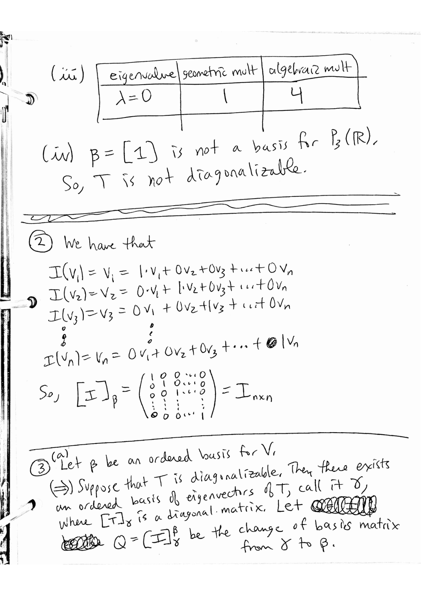
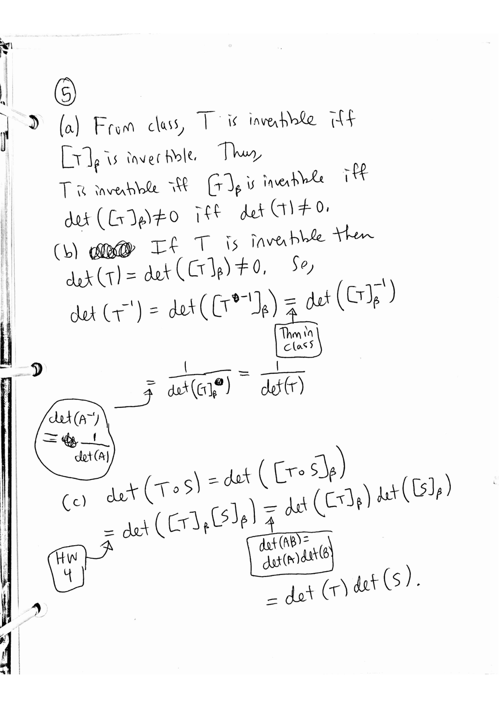

MATH 4570 Topic 5: Eigenvalues, Eigenvectors, and Diagonalization
Krebs' Fall 2026 MATH 4570 homework and extra practice problems, retyped verbatim from his PDFs. Homework solutions are Krebs' official ones (his pages, shown as images); extra-practice solutions are Claude's and labeled so. Tap "Solution" under a problem to jump to it, and "Problem" to jump back.
For: Quiz 4 (Mon Nov 2) · all quiz dates
Problems
Homework for Topic 5
1(a)
For each linear transformation $T$: (i) find all the eigenvalues of $T$, (ii) find a basis for each eigenspace of $T$, (iii) state the algebraic and geometric multiplicities of each eigenvalue of $T$, and verify that the geometric multiplicity is bounded by the algebraic multiplicity, (iv) determine if $T$ is diagonalizable.
$T : \mathbb{R}^3 \to \mathbb{R}^3$ given by $T\begin{pmatrix} a \\ b \\ c \end{pmatrix} = \begin{pmatrix} 4a + c \\ 2a + 3b + 2c \\ a + 4c \end{pmatrix}$
1(b)
$T : P_2(\mathbb{R}) \to P_2(\mathbb{R})$ given by $T(f(x)) = f(x) + (x + 1)f'(x)$
1(c)
$T : \mathbb{R}^3 \to \mathbb{R}^3$ given by $T\begin{pmatrix} a \\ b \\ c \end{pmatrix} = \begin{pmatrix} 3a + b \\ 3b \\ 4c \end{pmatrix}$
1(d)
$T : \mathbb{C}^2 \to \mathbb{C}^2$ given by $T\begin{pmatrix} z \\ w \end{pmatrix} = \begin{pmatrix} z + iw \\ iz + w \end{pmatrix}$
1(e)
$T : P_3(\mathbb{R}) \to P_3(\mathbb{R})$ given by $T(f(x)) = f'(x) + f''(x)$
2
Let $V$ be a finite-dimensional vector space over a field $F$. Let $\beta = [v_1, v_2, \ldots, v_n]$ be an ordered basis for $V$. Let $I_V : V \to V$ be the identity transformation given by $I_V(x) = x$ for all $x \in V$. Show that $[I_V]_\beta = I$ where $I$ is the $n \times n$ identity matrix.
3(a)
Let $F$ be a field. A matrix $A \in M_{n,n}(F)$ is said to be diagonalizable iff there exists an invertible matrix $Q \in M_{n,n}(F)$ such that $Q^{-1}AQ = D$ where $D$ is a diagonal matrix.
Let $V$ be a finite-dimensional vector space over a field $F$. Let $\beta$ be an ordered basis for $V$ and let $T : V \to V$ be a linear transformation. Then $T$ is diagonalizable if and only if $[T]_\beta$ is diagonalizable.
3(b)
Let $A$ be an $n \times n$ matrix over a field $F$. Then $A$ is diagonalizable if and only if $L_A$ is diagonalizable.
4
Let $V$ be a finite-dimensional vector space over a field $F$. Let $T : V \to V$ be a linear transformation. Let $\beta$ and $\gamma$ be ordered bases for $V$. Then $\det([T]_\beta) = \det([T]_\gamma)$.
5(a)
Let $V$ be a finite-dimensional vector space over a field $F$. Let $T : V \to V$ be a linear transformation. Recall that $\det(T)$ is defined to be $\det([T]_\beta)$ where $\beta$ is any basis of $V$.
$T$ is invertible if and only if $\det(T) \neq 0$.
5(c)
If $S : V \to V$ is another linear transformation, then $\det(T \circ S) = \det(T)\det(S)$.
6(a)
Let $V$ be a finite-dimensional vector space over a field $F$ and $T : V \to V$ be a linear transformation. Let $\lambda$ be an eigenvalue of $T$. Recall that
$$E_\lambda(T) = \{x \in V \mid T(x) = \lambda x\}$$
$E_\lambda(T)$ is a subspace of $V$.
6(b)
If $v_1, v_2, \ldots, v_r \in E_\lambda(T)$, then $c_1v_1 + c_2v_2 + \cdots + c_rv_r \in E_\lambda(T)$ for any scalars $c_1, c_2, \ldots, c_r \in F$.
Solutions
Krebs' official solutions: Homework for Topic 5

